|
 |
 |
||||||
|
|
|
||||||
The oaPathSeg class is a specialization of the oaShape class and is used to create orthogonal or diagonal physical routing segments. PathSegs have a begin and end point, a width, two end styles, and a layer and purpose number. The width and the two end styles, as well as any specific extension values (for variable or custom chamfers), are collectively represented by an oaSegStyle object.
The following shows the begin and end points for a PathSeg with two truncated end styles.
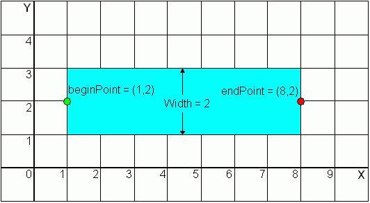
Note: In the figures that follow, a green dot indicates the beginPoint of a PathSeg, and a red dot indicates the endPoint.
PathSeg objects can be used stand-alone or they can be made a component of an oaRoute object. The former case represents geometric routing while the latter represents symbolic routing.
The following figure shows the difference between orthogonal and diagonal routing units.
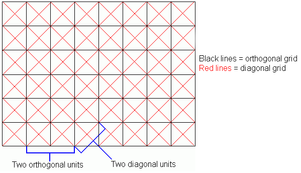
If a PathSeg is orthogonal, it's width is measured in orthogonal units. If a PathSeg is diagonal, it's width is measured in diagonal units.
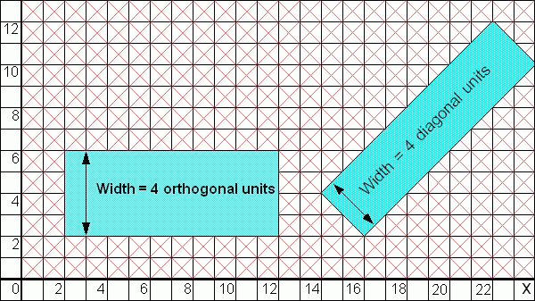
The oaSegStyle class class implements a utility class that lets you specify and retrieve the width and the two end styles for a PathSeg object. The oaEndStyle class, which is a supporting class of SegStyle, implements an enumerated type representing the different styles for path segment ends.
SegStyle objects by themselves are not persistent, but they become persistent when associated with one or more PathSeg objects.
OpenAccess provides five end styles for PathSegs. You can choose different end styles for each end of a PathSeg.
Style |
Enumeration |
|---|---|
| truncate | oacTruncateEndStyle |
| extend | oacExtendEndStyle |
| variable | oacVariableEndStyle |
| chamfer | oacChamferEndStyle |
| custom | oacCustomEndStyle |
The PathSeg terminates at the end point with no overlap.
The following code creates the above PathSeg. The PathSeg is on layer 3, which is metal 1, on the drawing purpose.
oaSegStyle myTruncateStyle(2, oacTruncateEndStyle, oacTruncateEndStyle); oaPoint begin(1,2); oaPoint end(8,2); oaPathSeg *myTruncatePathSeg = oaPathSeg::create(blk, 3, oavPurposeNumDrawing, begin, end, myTruncateStyle);
The PathSeg terminates one-half the segment’s width past the end point.
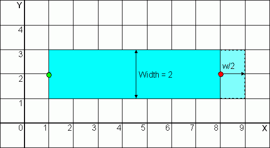
The following code creates the above PathSeg, which has one truncated end and one extended end.
oaSegStyle myEndExtendStyle(2, oacTruncateEndStyle, oacExtendEndStyle); oaPoint begin(1,2); oaPoint end(8,2); oaPathSeg *myEndExtendStylePathSeg = oaPathSeg::create(blk, 3, oavPurposeNumDrawing, begin, end, myEndExtendStyle);
The PathSeg terminates at a user-specified (endExt) distance past the end point.
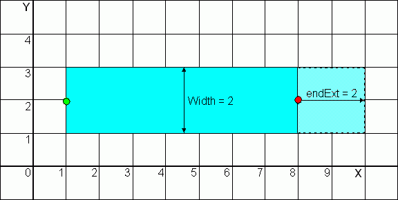
The following code creates the above PathSeg, which has one truncated end and one variable end.
oaSegStyle myEndVariableStyle(2, oacTruncateEndStyle, oacVariableEndStyle, 2); oaPoint begin(1,2); oaPoint end(8,2); oaPathSeg *myEndVariableStylePathSeg = oaPathSeg::create(blk, 3, oavPurposeNumDrawing, begin, end, myEndVariableStyle);
The PathSeg is terminated with an octagonal (chamfered) end style of fixed uniform dimensions.
OpenAccess uses the width of the PathSeg to calculate the dimensions of the chamfer. The width of the PathSeg is divided by two to get the length of the extension (endExt or beginExt). Note that the width must be an even number.
In the case of an orthogonal PathSeg, the left and right diagonals of the chamfer are obtained by multiplying the extension by 3/2.
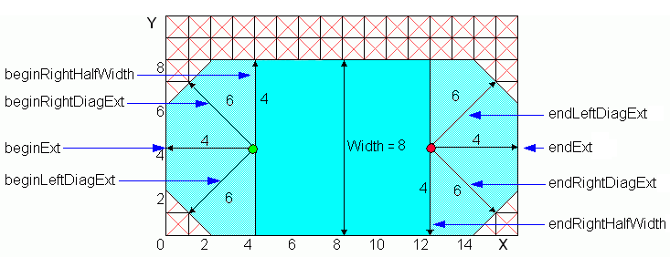
Note: The RightHalfWidth is always on the right side of the end point of the PathSeg when looking from the end point of the pathSeg to the end of the chamfer.
The following code creates the above PathSeg, which has two chamfered ends.
oaSegStyle myChamferStyle(8, oacChamferEndStyle, oacChamferEndStyle); oaPoint begin(4,4); oaPoint end(12,4); oaPathSeg *myChamferStylePathSeg = oaPathSeg::create(blk, 3, oavPurposeNumDrawing, begin, end, myChamferStyle);
In the case of a diagonal PathSeg, the left and right diagonals of the chamfer are obtained by multiplying the extension by 2/3.
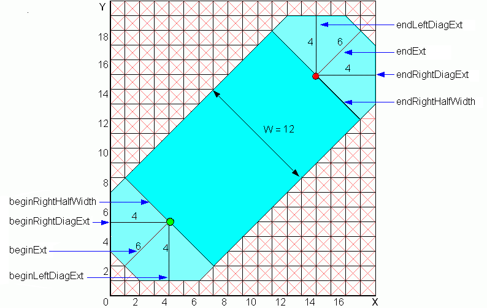
You can also create a PathSeg with two different end styles.
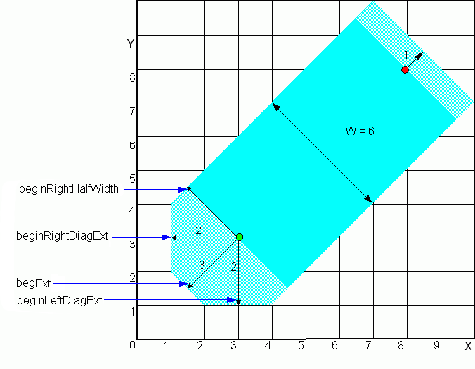
The following code creates the above PathSeg, which has a chamfered end at the begin point and an variable end at the end point.
oaSegStyle myChamferVariableStyle(6, oacChamferEndStyle, oacVariableEndStyle, 1); oaPoint begin(3,3); oaPoint end(8,8); oaPathSeg *myChamferVariableStylePathSeg = oaPathSeg::create(blk, 3, oavPurposeNumDrawing, begin, end, myChamferVariableStyle);
The PathSeg is terminated with an octagonal (chamfered) end-style where each dimension of the chamfer is user-specified. When creating a custom chamfer end style, you need to consider whether the PathSeg is orthogonal or diagonal.
The following figure shows a PathSeg with a custom chamfered end style on the endPoint. Note that the PathSeg is diagonal, so the endExt and endRightHalfWidth are specified in diagonal units.
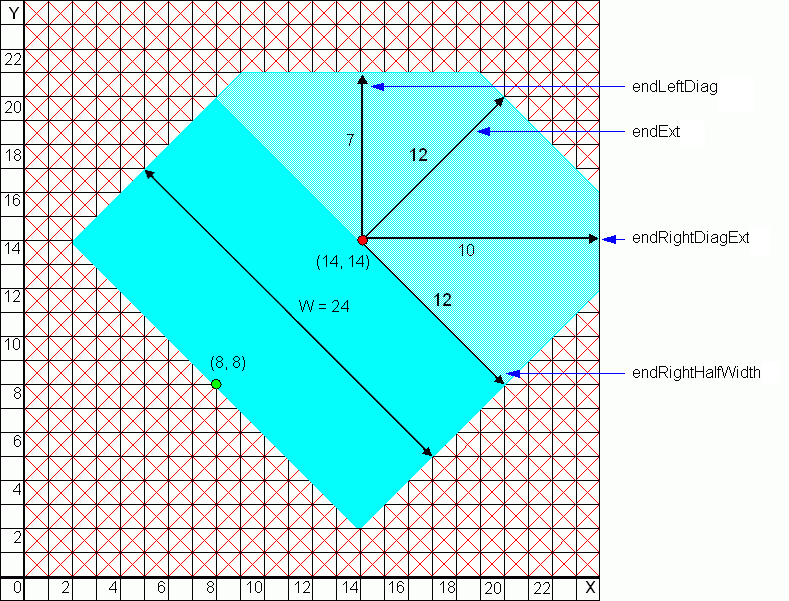
The following code creates the above PathSeg, which is truncated at the begin point and has a custom chamfer at the end point. The width of this SegStyle defaults to twice the endRightHalfWidth.
oaSegStyle myTruncateCustomStyle(oacTruncateEndStyle, oacCustomEndStyle, 12, 7, 10, 12); oaPoint begin(8,8); oaPoint end(14,14); oaPathSeg *myTruncateCustomStylePathSeg = oaPathSeg::create(blk, 3, oavPurposeNumDrawing, begin, end, myTruncateCustomStyle);
This figure shows a PathSeg with two different custom chamfered end styles. Note that the PathSeg is diagonal, so the endExt, endRightHalfWidth, beginExt, and beginRigthHalfWidth are specified in diagonal units.
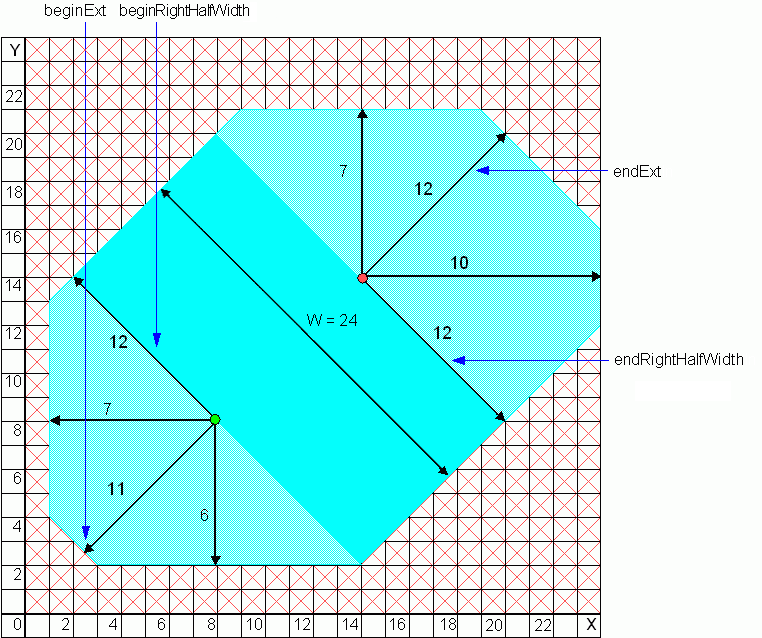
Note: The RightHalfWidth is always on the right side of the end point of the PathSeg when looking from the end point of the PathSeg to the end of the chamfer.
The following code creates the above PathSeg, which has two custom chamfered ends. The width for the SegStyle defaults to the sum of beginRightHalfWidth and endRightHalfWidth. An exception is thrown otherwise.
oaSegStyle myCustomStyle(oacCustomEndStyle, 11, 6, 7, 12, oacCustomEndStyle, 12, 7, 10, 12,); oaPoint begin(8,8); oaPoint end(14,14); oaPathSeg *myTruncateCustomStylePathSeg = oaPathSeg::create(blk, 3, oavPurposeNumDrawing, begin, end, myTruncateCustomStyle);
This figure shows orthogonal and diagonal PathSegs used together.
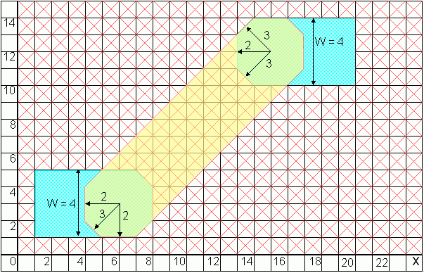

Copyright © 2001-2010 Cadence Design Systems, Inc.
All rights reserved.